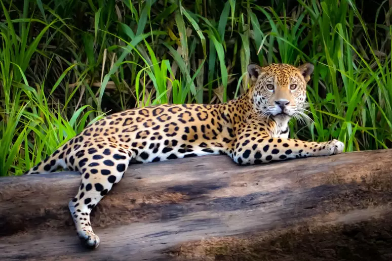
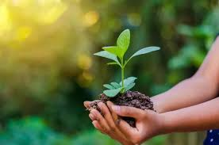

Sobre
Preservar o meio ambiente é crucial por várias razões que afetam tanto a nossa qualidade de vida quanto a sobrevivência das futuras gerações. Aqui estão alguns pontos principais:
1. Saúde Humana: A poluição do ar, água e solo pode causar uma série de problemas de saúde, incluindo doenças respiratórias, cardiovasculares e câncer. Um meio ambiente limpo contribui para a saúde e bem-estar da população.
2. Biodiversidade: A preservação dos habitats naturais é essencial para a sobrevivência de muitas espécies. A perda de biodiversidade pode desestabilizar ecossistemas e comprometer serviços ecológicos vitais.
3. Recursos Naturais: Muitos recursos, como água potável, solo fértil e minerais, são finitos. A gestão sustentável desses recursos é fundamental para garantir que estejam disponíveis para as gerações futuras.
4. Clima e Regulação: Os ecossistemas, como florestas e oceanos, desempenham papéis cruciais na regulação do clima e no controle das emissões de gases de efeito estufa. A degradação ambiental pode acelerar as mudanças climáticas e causar desastres naturais.
5. Economia: Muitas indústrias, como a agricultura, pesca e turismo, dependem diretamente de recursos naturais saudáveis. A degradação ambiental pode prejudicar esses setores e impactar economias locais e globais.
6. Qualidade de Vida: Áreas naturais e espaços verdes contribuem para a qualidade de vida, oferecendo oportunidades para recreação, relaxamento e conexão com a natureza.
Preservar o meio ambiente não é apenas uma responsabilidade ética, mas uma necessidade prática para manter a saúde, a segurança e o bem-estar de todos os seres vivos.


Dicas para Preservação
Aqui estão algumas dicas práticas para ajudar na preservação do meio ambiente:
1.Reduza, Reuse e Recicle:
- Reduza o consumo de produtos desnecessários e escolha itens com menos embalagens.
- Reuse objetos e materiais sempre que possível. Por exemplo, reutilize garrafas e sacolas.
- Recicle materiais como papel, plástico, vidro e metais, e separe-os corretamente.
2.Consuma Energia de Forma Eficiente:
- Utilize lâmpadas LED e aparelhos de baixo consumo energético.
- Desligue aparelhos eletrônicos e luzes quando não estiverem em uso.
- Considere a instalação de painéis solares para reduzir a dependência de energia não renovável.
3.Economize Água:
- Tome banhos mais curtos e conserte vazamentos em torneiras e tubulações.
- Use a água de forma eficiente em tarefas como lavagem de pratos e jardinagem.
- Recolha água da chuva para regar plantas.
4.Opte por Transportes Sustentáveis:
- Utilize transporte público, bicicletas ou caminhe sempre que possível.
- Considere caronas ou compartilhe viagens para reduzir o número de veículos na estrada.
- Se puder, opte por veículos elétricos ou híbridos.
5.Apoie Produtos e Práticas Sustentáveis:
- Compre produtos locais e orgânicos para reduzir a pegada de carbono associada ao transporte.
- Escolha empresas que adotam práticas sustentáveis e têm certificações ambientais.
- Evite produtos descartáveis e escolha alternativas reutilizáveis.
6.Cuide da Natureza:
- Plante árvores e cuide do seu jardim ou área verde local.
- Participe de eventos de limpeza de praias, parques e áreas naturais.
- Evite o uso de produtos químicos nocivos em jardins e faça compostagem de resíduos orgânicos.
7.Eduque e Conscientize:
- Informe amigos e familiares sobre a importância da preservação ambiental e compartilhe práticas sustentáveis.
- Participe de grupos ou iniciativas comunitárias voltadas para a proteção do meio ambiente.
-8.Apoie Políticas Ambientais:
- Vote em líderes e políticas que priorizam a proteção ambiental.
- Participe de audiências públicas e envolva-se em campanhas para promover legislações ambientais.
Implementar essas dicas pode ajudar a reduzir seu impacto ambiental e contribuir para a preservação do planeta. Cada pequena ação conta e pode fazer uma grande diferença quando adotada por muitas pessoas.
